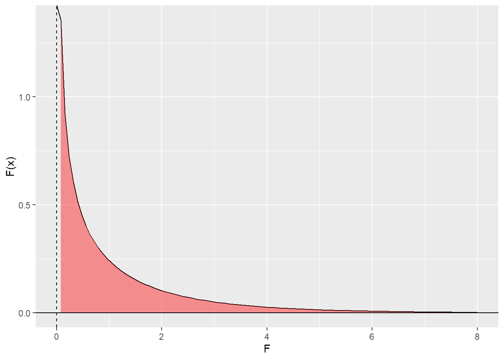

ExoPlanetAnalysis
NASA Exoplanet Archive
Introduction
Exo planets are planets that are outside our solar system. The existence of such planets was formulated in 1917, but they were first discovered in 1992. As of December 2022, 5284 exo planets have been confirmed. There is a bias that the discovery methods favor planets that are near the star.
Data
We got the data from NASA Exo planet archives. The data is a comprehensive list of the exo planets discovered, the time and method of discovery along with the features associated with the planets like mass, radius, orbit length, orbital period etc.,
Getting the data.
The following loaded dataset was first manually downloaded as a csv file from the previously mentioned NASA planet archives. (Most recent download date: December 7th, 2022). From what we’ve found, most dataset archives for the space sciences or NASA typically provide data to be accessed this way, and we were unable to webscrape the data directly from the link. So, to comply with the project’s reproducibility criteria, the data is loaded from the GitHub repo for this project.
url <- "https://raw.githubusercontent.com/Rokkaan5/5301-project-test/main/data/PSCompPars_2022.12.07_15.29.01.csv?token=GHSAT0AAAAAAB3GS64J5Y4EH3UOGIIULXQAY4RJZ4Q" # place holder for GitHub data extraction
planet_data <- read_csv(url,skip=88,show_col_types = FALSE)
head(planet_data)# A tibble: 6 × 85
loc_rowid pl_name hostname sy_snum sy_pnum discov…¹ disc_…² disc_…³ pl_co…⁴
<dbl> <chr> <chr> <dbl> <dbl> <chr> <dbl> <chr> <dbl>
1 1 11 Com b 11 Com 2 1 Radial … 2007 Xinglo… 0
2 2 11 UMi b 11 UMi 1 1 Radial … 2009 Thueri… 0
3 3 14 And b 14 And 1 1 Radial … 2008 Okayam… 0
4 4 14 Her b 14 Her 1 2 Radial … 2002 W. M. … 0
5 5 16 Cyg B b 16 Cyg B 3 1 Radial … 1996 Multip… 0
6 6 17 Sco b 17 Sco 1 1 Radial … 2020 Lick O… 0
# … with 76 more variables: pl_orbper <dbl>, pl_orbpererr1 <dbl>,
# pl_orbpererr2 <dbl>, pl_orbperlim <dbl>, pl_orbsmax <dbl>,
# pl_orbsmaxerr1 <dbl>, pl_orbsmaxerr2 <dbl>, pl_orbsmaxlim <dbl>,
# pl_rade <dbl>, pl_radeerr1 <dbl>, pl_radeerr2 <dbl>, pl_radelim <dbl>,
# pl_radj <dbl>, pl_radjerr1 <dbl>, pl_radjerr2 <dbl>, pl_radjlim <dbl>,
# pl_bmasse <dbl>, pl_bmasseerr1 <dbl>, pl_bmasseerr2 <dbl>,
# pl_bmasselim <dbl>, pl_bmassj <dbl>, pl_bmassjerr1 <dbl>, …# Dataset dimensions
dim(planet_data) # n-rows x n-columns [1] 5220 85This particular dataset has 5220 exo planets and 84 properties associated with each planet.
colnames(planet_data) [1] "loc_rowid" "pl_name" "hostname" "sy_snum"
[5] "sy_pnum" "discoverymethod" "disc_year" "disc_facility"
[9] "pl_controv_flag" "pl_orbper" "pl_orbpererr1" "pl_orbpererr2"
[13] "pl_orbperlim" "pl_orbsmax" "pl_orbsmaxerr1" "pl_orbsmaxerr2"
[17] "pl_orbsmaxlim" "pl_rade" "pl_radeerr1" "pl_radeerr2"
[21] "pl_radelim" "pl_radj" "pl_radjerr1" "pl_radjerr2"
[25] "pl_radjlim" "pl_bmasse" "pl_bmasseerr1" "pl_bmasseerr2"
[29] "pl_bmasselim" "pl_bmassj" "pl_bmassjerr1" "pl_bmassjerr2"
[33] "pl_bmassjlim" "pl_bmassprov" "pl_orbeccen" "pl_orbeccenerr1"
[37] "pl_orbeccenerr2" "pl_orbeccenlim" "pl_insol" "pl_insolerr1"
[41] "pl_insolerr2" "pl_insollim" "pl_eqt" "pl_eqterr1"
[45] "pl_eqterr2" "pl_eqtlim" "ttv_flag" "st_spectype"
[49] "st_teff" "st_tefferr1" "st_tefferr2" "st_tefflim"
[53] "st_rad" "st_raderr1" "st_raderr2" "st_radlim"
[57] "st_mass" "st_masserr1" "st_masserr2" "st_masslim"
[61] "st_met" "st_meterr1" "st_meterr2" "st_metlim"
[65] "st_metratio" "st_logg" "st_loggerr1" "st_loggerr2"
[69] "st_logglim" "rastr" "ra" "decstr"
[73] "dec" "sy_dist" "sy_disterr1" "sy_disterr2"
[77] "sy_vmag" "sy_vmagerr1" "sy_vmagerr2" "sy_kmag"
[81] "sy_kmagerr1" "sy_kmagerr2" "sy_gaiamag" "sy_gaiamagerr1"
[85] "sy_gaiamagerr2" The detailed description of the columns in the data is available here
Data cleaning
Selecting columns that are of interest:
- pl_name - planet name
- hostname - stellar name
- sy_snum - number of stars in the planetary system
- sy_pnum - number of planets in the planetary system
- discoverymethod - method through which it was discovered
- disc_year - year in which it was discovered
- disc_facility - facility at which it was discovered
- pl_controv_flag - If the existence of it is controversial
- pl_orbper - Estimated period of orbiting (in days)
- pl_orbsmax - Length of the semi major axis of the orbit
- pl_bmasse - Best estimated mass of the planet in units of earth’s mass
- pl_bmassj - Best estimated mass of the planet in units of earth’s jupiter
planet_data <- planet_data %>% select(pl_name, hostname, sy_snum, sy_pnum, discoverymethod, disc_year, disc_facility, pl_controv_flag, pl_orbper, pl_orbsmax, pl_bmasse, pl_bmassj)
head(planet_data)# A tibble: 6 × 12
pl_name hostname sy_snum sy_pnum discover…¹ disc_…² disc_…³ pl_co…⁴ pl_or…⁵
<chr> <chr> <dbl> <dbl> <chr> <dbl> <chr> <dbl> <dbl>
1 11 Com b 11 Com 2 1 Radial Ve… 2007 Xinglo… 0 326.
2 11 UMi b 11 UMi 1 1 Radial Ve… 2009 Thueri… 0 516.
3 14 And b 14 And 1 1 Radial Ve… 2008 Okayam… 0 186.
4 14 Her b 14 Her 1 2 Radial Ve… 2002 W. M. … 0 1765.
5 16 Cyg B b 16 Cyg B 3 1 Radial Ve… 1996 Multip… 0 798.
6 17 Sco b 17 Sco 1 1 Radial Ve… 2020 Lick O… 0 578.
# … with 3 more variables: pl_orbsmax <dbl>, pl_bmasse <dbl>, pl_bmassj <dbl>,
# and abbreviated variable names ¹discoverymethod, ²disc_year,
# ³disc_facility, ⁴pl_controv_flag, ⁵pl_orbper# % of missing values for each column
colMeans(is.na(planet_data))*100 pl_name hostname sy_snum sy_pnum discoverymethod
0.000000 0.000000 0.000000 0.000000 0.000000
disc_year disc_facility pl_controv_flag pl_orbper pl_orbsmax
0.000000 0.000000 0.000000 3.524904 5.287356
pl_bmasse pl_bmassj
0.440613 0.440613 The above chunk displays the percentage of missing values in each column. Seeing that no column is missing more than 6% of their data, we found it reasonable to conclude that there is not a significant amount of missing information (for the selected columns we chose).
Exploratory Data Analysis

There is a clear imbalance in the number of planets discovered by different methods. Transit and Radial velocity are the methods through which a lot of planets were discovered.

There’s a clear indication of the increase in discoveries over time, although 2014 and 2016 were particularly successful years.

Most planetary systems are like solar systems with a single star.
# Number of "raised" controversy flags
sum(planet_data$pl_controv_flag == 1) [1] 28The dataset includes information about potential controversy over a planet’s existence, in which the column pl_controv_flag consists of binary values (0 = no or 1 = yes) that indicate if there have been published papers that challenge the existence of the planet.
There are only 28 exo planets whose existence are in question so far.
Hypothesis testing
As mentioned earlier, there is a bias that the discovery methods tend to favor planets near the sun. We can do a hypothesis testing to check if this is significant bias.
To perform this analysis, we can take our own solar system as a sample (Let us assume that all the planets in our solar system are close to the sun). If there is no bias, the variance of the exo planets orbital semi major axis should be significantly different than the variance of the solar system planets orbital semi major axis.
\[H_o:\sigma_1^{2}=\sigma_2^{2}\] \[H_a:\sigma_1^{2}\neq\sigma_2^{2}\]
For the solar system planets orbital semi major axis,we got the data from here
solar_planets <- c("Mercury","Venus","Earth","Mars","Jupiter","Saturn","Uranus","Neptune")
axis_lengths <- c(0.3871,0.7233,1.000 ,1.5273 ,5.2028 ,9.5388 ,19.1914 ,30.0611)
solar_planets <- data.frame(solar_planets,axis_lengths)
colnames(solar_planets) <- c("pl_name","pl_orbsmax")
solar_planets$System <- "Solar System"
exo_planets <- planet_data %>% select(pl_name,pl_orbsmax) %>%
mutate(System = "Exo Planets")
planets <- rbind(solar_planets,exo_planets) %>% filter(!is.na(pl_orbsmax))
out <- aov(formula = pl_orbsmax ~ System, data = planets)
summary(out) Df Sum Sq Mean Sq F value Pr(>F)
System 1 17 17 0.001 0.976
Residuals 4950 95382874 19269 df1 <- 1
df2 <- 4938
F_cr <- qf(0.05,1,4938)
f <- 0.001
rejection_f_test <- function(x){
y <- df(x,df1,df2)
y[x<F_cr] <- NA
y
}
ggplot(data.frame(x = c(0,8)), aes(x)) +
stat_function(fun = function(x){df(x,1,4938)},geom = "line")+
stat_function(fun = function(x){rejection_f_test(x)}, geom = "area", fill = "red",alpha = 0.4)+
geom_vline(xintercept = f, linetype = 'dashed') +
geom_hline(yintercept = 0) + xlab('F')+ylab('F(x)')
The obtained F-Value is 0.01 and the corresponding p_value is 0.976 which is significantly higher than \(\alpha=0.05\), we fail to reject the null hypothesis.
Conclusion
The discovery methods are biased towards exo planets that are closer to the star if we define the planets in the solar system to be closer to the sun.
Session info
R version 4.2.2 (2022-10-31 ucrt)
Platform: x86_64-w64-mingw32/x64 (64-bit)
Running under: Windows 10 x64 (build 19044)
Matrix products: default
locale:
[1] LC_COLLATE=English_United States.utf8
[2] LC_CTYPE=English_United States.utf8
[3] LC_MONETARY=English_United States.utf8
[4] LC_NUMERIC=C
[5] LC_TIME=English_United States.utf8
attached base packages:
[1] stats graphics grDevices utils datasets methods base
other attached packages:
[1] rvest_1.0.3 forcats_0.5.2 stringr_1.5.0 dplyr_1.0.10
[5] purrr_0.3.5 readr_2.1.3 tidyr_1.2.1 tibble_3.1.8
[9] ggplot2_3.4.0 tidyverse_1.3.2
loaded via a namespace (and not attached):
[1] lubridate_1.9.0 assertthat_0.2.1 digest_0.6.30
[4] utf8_1.2.2 R6_2.5.1 cellranger_1.1.0
[7] backports_1.4.1 reprex_2.0.2 evaluate_0.18
[10] httr_1.4.4 pillar_1.8.1 rlang_1.0.6
[13] googlesheets4_1.0.1 curl_4.3.3 readxl_1.4.1
[16] rstudioapi_0.14 rmarkdown_2.18 labeling_0.4.2
[19] googledrive_2.0.0 htmlwidgets_1.5.4 bit_4.0.5
[22] munsell_0.5.0 broom_1.0.1 compiler_4.2.2
[25] modelr_0.1.10 xfun_0.35 pkgconfig_2.0.3
[28] htmltools_0.5.3 tidyselect_1.2.0 fansi_1.0.3
[31] crayon_1.5.2 tzdb_0.3.0 dbplyr_2.2.1
[34] withr_2.5.0 grid_4.2.2 jsonlite_1.8.3
[37] gtable_0.3.1 lifecycle_1.0.3 DBI_1.1.3
[40] magrittr_2.0.3 scales_1.2.1 cli_3.4.1
[43] stringi_1.7.8 vroom_1.6.0 farver_2.1.1
[46] fs_1.5.2 xml2_1.3.3 ellipsis_0.3.2
[49] generics_0.1.3 vctrs_0.5.1 tools_4.2.2
[52] bit64_4.0.5 glue_1.6.2 hms_1.1.2
[55] parallel_4.2.2 fastmap_1.1.0 yaml_2.3.6
[58] timechange_0.1.1 colorspace_2.0-3 gargle_1.2.1
[61] knitr_1.41 haven_2.5.1